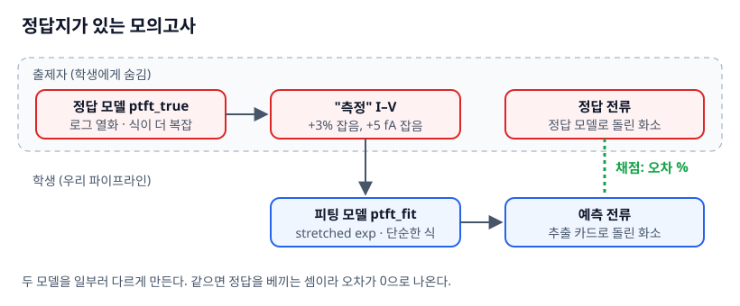

TFT 열화 측정에서 시작해 모델 파라미터 → 열화식 → 6T1C·8T1C 화소 회로 시뮬레이션으로 시간별 OLED 애노드 전류를 계산한다. 같은 데이터로 기존 물리 흐름 · AI 단독 · Hybrid를 비교하고, 8T1C가 실제로 무엇을 바꾸는지 프레임 단위로 확인한다.
① I–V 측정→② 모델카드 추출→③ 열화식→④ 화소 회로 과도해석→⑤ 애노드 전류
−13.7%
3000 h 뒤 중계조 전류를 깎는 몫이 가장 큰 TFT는 가장 많이 늙는 T5(−0.8%)가 아니라 구동 T1이었다.
126% vs 2.6%
처음 보는 저계조에서 AI 단독(GBM)은 무너지고, 물리 결과의 잔차만 보정한 Hybrid는 버텼다 (평균 오차).
−25% / ±0
8T1C의 T8(OBS)은 계조 전환 첫 프레임 오차를 25% 줄였지만, 3000 h 유지율(수명)에는 이득이 없었다.
⚠ 모든 데이터는 공개 문헌 수준 파라미터로 만든 합성값이다. 실측·PDK·특정 제조사 회로는 포함하지 않는다.
01 · 문제
밝기는 전류로 정해지고, 전류는 TFT 여러 개가 함께 만든다
OLED 휘도는 애노드 전류에 비례한다. 그 전류는 화소 안 TFT 6~8개가 함께 만든다. 그래서 TFT 하나하나의 열화를 회로에 넣어 돌려봐야 화소 전류가 시간에 따라 어떻게 변하는지 알 수 있다.
비유 — 작은 악단의 음량
화소 = 6~8명이 연주하는 악단, 애노드 전류 = 객석에서 들리는 음량
연주자(TFT)마다 나이 들며 힘이 빠진다 → 열화
그런데 파트마다 음량 기여가 다르다. 주선율(구동 T1)이 약해지면 바로 들리고, 잠깐 들어오는 심벌즈(스위치)는 티가 안 난다
약해진 파트를 크게 연주시키는 지휘자 = 문턱전압 보상 회로
비유가 깨지는 곳
연주자가 독립적이지 않다. 한 TFT의 열화가 다른 TFT의 바이어스를 바꾸고, 그게 다시 스트레스를 바꾼다
음량은 한 숫자가 아니다. 전류는 프레임 안의 파형이다 — 8장에서 프레임 단위로 다시 본다
밝기 ≠ 전류. OLED 효율도 늙는다. 이 자료는 TFT 열화 → 애노드 전류까지만
02 · 전체 흐름
다섯 칸 파이프라인과 AI가 들어갈 두 자리
AI는 흐름을 한 번에 건너뛰거나(AI 단독), ④의 결과에 남은 오차만 고친다(Hybrid).
칸
입력
출력
도구
① 측정
스트레스 시간별 TFT
transfer·output I–V
합성 gen_meas.py
② 모델카드
I–V
VT0, U0, SS, GOFF …
scipy.optimize.least_squares
③ 열화식
시간별 모델카드
ΔVth(t), μ(t) 계수
stretched exponential
④ 화소 회로
카드 + 열화식 + 구동 파형
노드 전압·전류 파형
ngspice 45.2 + OpenVAF (Verilog-A)
⑤ 애노드 전류
파형
발광 구간 평균 전류
meas tran AVG
재현성sudo 없이 사용자 영역에 설치한 ngspice 45.2와 OpenVAF-Reloaded로 돌린다. bash code/run_all.sh 한 번이면 저장소에 들어 있는 결과 파일과 바이트 단위로 같은 결과가 나온다.
03 · 측정과 모델카드 추출
정답을 모르는 실측 상황을 흉내 내려면, 정답 모델과 피팅 모델을 다르게 둔다
"측정값"은 정답 모델ptft_true.va가 만든다. 피팅은 그보다 단순한 ptft_fit.va로 한다. 둘이 같으면 오차 0이 나와서 답을 베낀 채점이 된다.
정답 모델
피팅 모델
문턱
VT0 + 열화 − SIGMA·Vsd
VT0 + 열화
이동도 감쇠
THETA 있음
없음
구성
6개 중 T3·T4는 IGZO NMOS, 나머지는 LTPS PMOS (LTPO 흉내). POL=±1 하나로 표현
log 전류로 피팅한다. 선형으로 맞추면 µA 영역만 맞고 서브문턱(pA)은 무시된다
측정 바닥(15 fA) 아래 점은 버리지 않고 상한으로 쓴다. 버리면 Ioff·GOFF가 아무 값이나 된다
Verilog-A와 numpy 쌍둥이 식이 같은지 먼저 검사한다 (상대오차 ≤ 1e-4)

정답지와 채점 대상을 분리한다.바닥 아래 점은 "이보다 작다"는 상한 정보다.
04 · 열화식과 블라인드 예측
1000시간 데이터로 3000시간을 맞힐 수 있나
0–1000 h의 ΔVth와 이동도 감소를 식 하나로 이어 붙이면 측정하지 않은 시간의 모델카드를 만들 수 있다. 이 식을 믿어도 되는지는 피팅에 안 쓴 3000 h로만 판단한다.
8T1C에서 한 TFT만 3000 h 열화: T1 −13.71%, T5 −0.76%, T6 −0.24%, T3 −0.20%, T7 −0.00%, T8 −0.00%.
제습기를 샀는데 방에 처음부터 습기가 없었다T7·T8은 OLED 잔류 전하와 TFT 히스테리시스를 잡는 장치다. 그런데 정답 모델에는 히스테리시스가 없고, 지표는 2프레임 정상상태 평균뿐이라 계조 전환 응답을 보지 않는다. 시뮬레이터가 틀린 게 아니라 질문이 모델에 없었다. → 다음 섹션에서 그 질문을 모델에 넣는다.
08 · 8T1C 2차 — 히스테리시스와 프레임 응답
빠진 현상을 넣자 T8이 일을 했다 — 단, 조건부로
두 가지를 바꿨다. ① TFT 모델에 가역 트랩 상태 하나를 넣고, ② 지표를 실타이밍 60 Hz에서 계조 전환 직후 프레임별 전류로 바꿨다.
AI 에이전트가 만든 함정첫 코드는 duty를 "S1<0인 시간점 개수 / 전체 점 개수"로 셌다 → 0.082. ngspice는 에지 근처에 점을 몰아 찍으므로 13.5배 과대였다. 측정값을 회로 카드에 안 넣는 버그도 있었다. 둘 다 에러 없이 그럴듯한 숫자를 냈고, 100 µs / 16.667 ms 손 검산으로 잡았다.
09 · 공동연구로 옮기기
가장 먼저 깨지는 것은 코드가 아니라 정의다
Vth 추출 규칙, 측정 지연, TFT 번호, 전류를 재는 노드가 팀마다 다르면 같은 숫자가 다른 뜻이 된다. 그래서 첫 2주는 시뮬레이션보다 정의 대응표와 기준선 재현에 쓴다.
측정팀에 확인할 핵심
LTPS·산화물 각각의 stress / read / recovery 순서와 시간
stress를 멈추고 잰다면 멈춤 → 측정 지연은 몇 초인가 — 그보다 짧은 τ의 가역 성분은 데이터에 남지 않는다 (8장 결과가 τ에 좌우됨)
output I–V도 시간별로 재는가 (드레인 의존성은 transfer만으로 못 뽑는다)
소자 간 산포와 반복 측정 오차를 어떻게 나누는가
Vth 추출 규칙·전류 창, 측정 바닥 전류
가역 회복과 비가역 이동을 나눈 실험이 있는가
회로·모델팀에 확인할 핵심
시뮬레이터와 정확한 버전, 사용 compact model
모델카드 추출의 목적함수 (선형? log? 가중치?)
열화 전후 카드를 따로 피팅하는가, 시간 함수로 잇는가
화소 전류를 어느 노드에서, 어느 구간 평균으로 정의하는가
TFT 하나씩만 바꾸는 민감도·제거 해석이 가능한가
모델 코드와 테스트벤치의 반출 범위
첫 미팅에서 받을 최소 파일
정상 동작하는 최소 모델 + 배포 조건
모델카드 예제 1개
단일 TFT transfer / output 테스트벤치
화소 넷리스트 또는 반출 범위 안의 토폴로지 설명
타이밍 파형 정의
시뮬레이터 실행 명령
기대 출력 1개 — 없으면 우리 쪽 실행이 맞는지 판정할 방법이 없다
히스테리시스 파라미터를 측정으로 정하는 법기준 read → stress 계단(Δ) → 지연 td 뒤 빠른 read → recovery 추적. 돌아오는 부분 = 가역(KH ≈ 진폭/Δ, 회복 곡선에서 τ), 남는 부분 = 비가역(열화식으로). td > τ이면 KH를 과소추정하므로 td를 바꿔 재고 0으로 외삽한다.
단계와 합격 기준
단계
기간(가늠)
할 일
합격 기준
0. 정의·기준선
2주
기능 대응표, 프로토콜·스키마 통일, 기존 모델 재현
기대 출력 1개를 양쪽 환경에서 재현
1. 단일 TFT
1–2개월
구동 TFT 초기·열화 I–V 피팅, 시간·온도 열화식, 가역 성분 τ
같은 바이어스에서 초기·열화 I–V 재현
2. 회로 민감도
2–3개월
TFT별 민감도·제거 행렬, 동시 열화, 프레임 응답
전류 변화 방향 재현 → 크기 재현
3. Hybrid
4–6개월
물리 잔차 ML, 새 소자·미래 시간 검증
학습 안 한 소자·후기 시간 오차 범위, 90% 예측구간 포함률
KPI 숫자 문턱은 측정 바닥 노이즈와 반복성을 확인한 뒤 같이 정한다. 먼저 숫자를 정하면 노이즈보다 작은 목표를 약속하게 된다.
10 · 한계와 경계
이 자료가 증명하지 않는 것
데이터·모델 한계
전부 합성 데이터, 난수 시드 1개, 모집단 1개. "항상 낫다"의 증거가 아니라 실험 설계 교보재
6T1C는 교과서형 공개 토폴로지, 8T1C는 확장 연습용 예시 하나
히스테리시스는 트랩 1개·충방전 시정수 동일·모든 TFT에 같은 KH. τ ≤ 10 ms만 확인
TFT별 스트레스 이력 고정 (OBS가 T1 열화 속도에 주는 되먹임 없음)
OLED는 다이오드 + 0.3 pF. 효율 열화·휘도 수명·온도 가속은 범위 밖
공개 범위
이 저장소: 합성 예제 코드·데이터·교재만
실측 I–V, 화소 전류, 실제 넷리스트·타이밍, 연구실 compact model 코드는 공개 저장소에 올리지 않는다
비밀유지 계약은 공유의 전제일 뿐 공개 허가가 아니다
코드는 공개 가능한 형태로, 데이터 경로는 설정 파일로 분리
11 · 교재와 재현
석·박사 과정용 교재 11편
소자·회로·ML 중 하나는 익숙하고 나머지는 처음인 사람을 위해 썼다. 새 개념마다 일상 비유 하나와 "그 비유가 틀리는 지점"을 같이 적었다.
직접 돌려보기
git clone https://github.com/waterfirst/tft-aging-ml-textbook.git
cd tft-aging-ml-textbook/code
python3 -m venv .venv && . .venv/bin/activate
pip install -r requirements.txt
# ngspice(39 이상)와 openvaf가 PATH에 있어야 한다 → 1장
bash run_all.sh